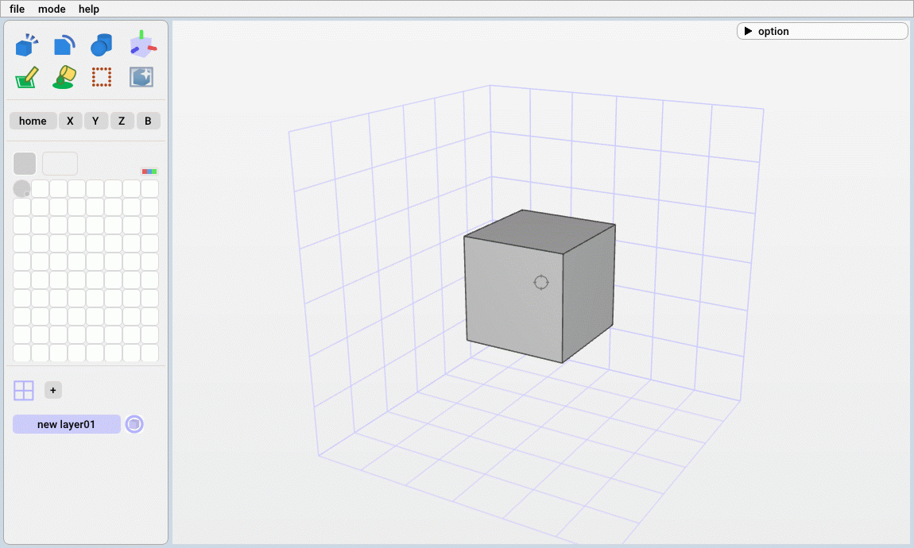

視点の変更方法やボクセルの加工方法を解説します。
１０分ほどで基本的な操作はマスターできると思います。
１０分ほどで基本的な操作はマスターできると思います。
視点の変更
スペースキーを押しながらマウス操作で視点を変更できます。

視点の変更
| ・左クリック＋移動 | ：角度を変更 |
| ・マウススクロール | ：スケールを変更 |
| ・右クリック | ：クリックした場所を画面中央に移動 |
| ・中央クリック＋移動 | ：位置を変更 |
視点の変更
ボクセルの加工
画面左上のメニューからボクセルの加工方法を選択できます。

編集メニュー
なお、加工時の色は画面左のパレットから変更できます。
パレット（図中左上の灰色が選択中）
| block ブロック編集モード |
cut 輪郭カットモード |
prim 基本形状モード |
| pen ペンモード |
fill 塗りつぶしモード |
select 選択モード |
編集メニュー
なお、加工時の色は画面左のパレットから変更できます。
パレット（図中左上の灰色が選択中）
block ブロック編集モード
| ・左/右クリック | ：ボクセルの追加/削除 |
| ・左/右クリック＋移動 | ：ライン上でボクセルを追加/削除 |
| ・Shift＋左/右クリック＋移動 | ：領域内でボクセルを追加/削除 |
| ・マウススクロール | ：ブロックのサイズを変更/td> |
| ・中央クリック | ：選択した部分の色をスポイト |
ボクセルの追加(左クリック＋移動)

ボクセルの追加(Shift＋左クリック＋移動)
cut 輪郭カットモード
| ・左/右クリック＋移動 | ：選択した領域を削除(左：自由曲線、右：直線) |
| ・マウススクロール | ：円のサイズを変更 |
輪郭のカット(左クリック：自由曲線、右クリック：直線)
prim 基本形状モード
| ・左クリック | ：選択した場所に基本形状を設定 | |
| ・軸をクリック＋移動 | ：基本形状の位置を移動 | |
| 形状・位置・サイズの変更は左メニューからも操作できます。 | ||
基本形状の設定（左クリック）と移動（左クリック＋移動）
pen ペンモード
| ・左/右クリック | ：色の設定/クリア |
| ・左/右クリック＋移動 | ：ライン上で色の設定/クリア |
| ・Shift＋左/右クリック＋移動 | ：領域内で色の設定/クリア |
| ・マウススクロール | ：ブロックのサイズを変更/td> |
| ・中央クリック | ：選択した部分の色をスポイト |
色の設定(左クリック＋移動)

色の設定(Shift＋左クリック＋移動)
fill 塗りつぶしモード
| ・左/右クリック | ：塗りつぶし/クリア |
| ・中央クリック | ：選択した部分の色をスポイト |
塗りつぶし(左クリック)
select 選択モード
| ・左/右クリック | ：領域の設定/リセット |
| ・Ctrl+C （左メニューの[copy]ボタン） | ：選択した領域をコピー |
| ・Ctrl+X （左メニューの[cut]ボタン） | ：選択した領域をカット |
| ・Ctrl+V （左メニューの[paste]ボタン） | ：コピーorカットした領域をペースト |

物体の選択と移動
パレットの編集
| ・右クリック | ：色の編集画面の表示 |
| ・左クリック＋移動 | ：パレットの色の移動 |
色の編集（右クリック）

色の移動（左クリック＋移動）